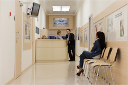
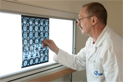
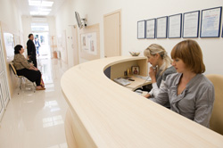
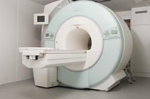
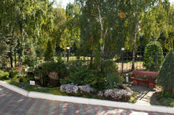

Мечты о совершенстве диагностики осуществилась с открытием уникального метода
магнитно-резонансной томографии!

В 2002 году Одесса стала первым городом в Украине, где в центре медицинской диагностики "МАГНИ ТАЙМ" появился магнитно-резонансный томограф "Magnetom Concerto" открытого типа все желающие могут пройти обследование на магнитно-резонансном томографе.
В ноябре 2011 года в центре медицинской диагностики "МАГНИ ТАЙМ" появился новейший единственный в Украине современный мощнейший аппарат магнитно-резонансный томограф "Magnetom Espree" открытого типа. Мы были первыми и остаемся лучшими!
Благодаря появлению магнитно-резонансной томографии сегодня стало возможным и доступным обследование всех областей человеческого организма - диагностика заболеваний внутренних органов, суставов, скелетного строения человека.
Здесь вы можете провести обследование всего организма в профилактических целях и, соответственно, имеете возможность выявить разнообразные патологии на самых ранних стадиях, устранить или приостановить их развитие, что позволит сохранить активный жизненный тонус до глубокой старости.
Самое важное, данный метод обследования совершенно безвреден, что и отличает магнитно-резонансную томографию от рентгенологических методов диагностики (рентгена, компьютерной томографии).
Центр медицинской диагностики "МАГНИ ТАЙМ" проводит обследования интересующего Вас органа или всего организма без дополнительных процедур и подготовки. Данное обследование занимает минимум времени и позволяет избежать изнуряющих посещений медицинских учреждений.
В виду того, что магнитно-резонансный томограф открытого типа, появилась возможность обследовать детей любого возраста (в сопровождении родителей),пациентов страдающих клаустрофобией, пациентов с тяжелыми травмами и тех, кто по причине заболеваний не может двигаться, а также людей нестандартной комплекции.
Центр медицинской диагностики "МАГНИ ТАЙМ" имеет огромное значение для нашего региона благодаря своим возможностям быстрой диагностики самых сложных заболеваний и патологий. Одесская область сегодня находится на первом месте в Украине по уровню онкозаболеваемости. Для обследования таких больных, выявления онкозаболеваний на ранних стадиях, необходим этот магнитно-резонансный томограф. Обследование без облучения - именно в нем нуждаются эти люди.
  